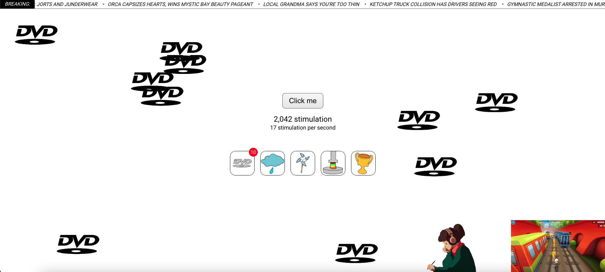
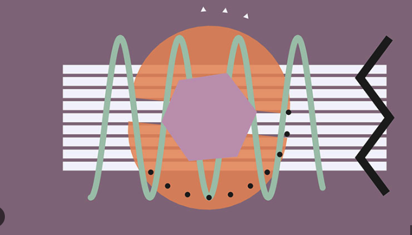
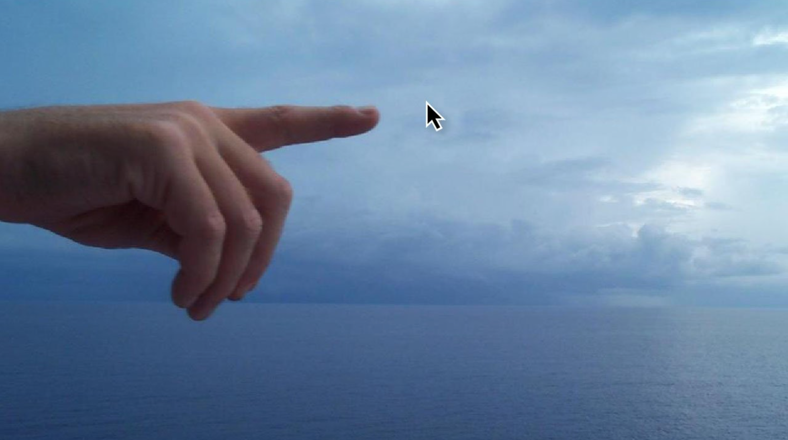

Curated by: Rahul Badiani
This exhibition highlights web-based artworks that rely on user interaction as a core element of the experience. These pieces showcase the internet as a space for play and exploration. Unlike traditional artwork displayed in museums, which is meant to be observed from a distance, net art transforms the audience into active participants within the work itself.
This collection aims to explore this concept by gathering net art that challenges passive consumption by making interaction essential. Through playful mechanics, captivating animations, and immersive audio effects, these works demonstrate the internet's potential to serve as an evolving canvas for artists to share their creations. Each piece in this collection seeks to engage and interact with the viewer.
Neal Agarwal, 2023
A web game that critiques trending digital stimulation and engagement loops. The user continuously clicks the button to upgrade their experience in the game. The work effectively shows how social media and games are created to retain the user.
Jono Brandel & Lullatone, 2014
Patatap is net art that transforms the keyboard into an interactive soundboard. With each key press is a unique sound and an animation that appears on the screen.
Moniker, 2012
Pointer Pointer finds and displays a photo of someone pointing to the exact location of your mouse cursor. Each time the cursors moves on the screen the website will display a new photo that has someone pointing at the cursor.
